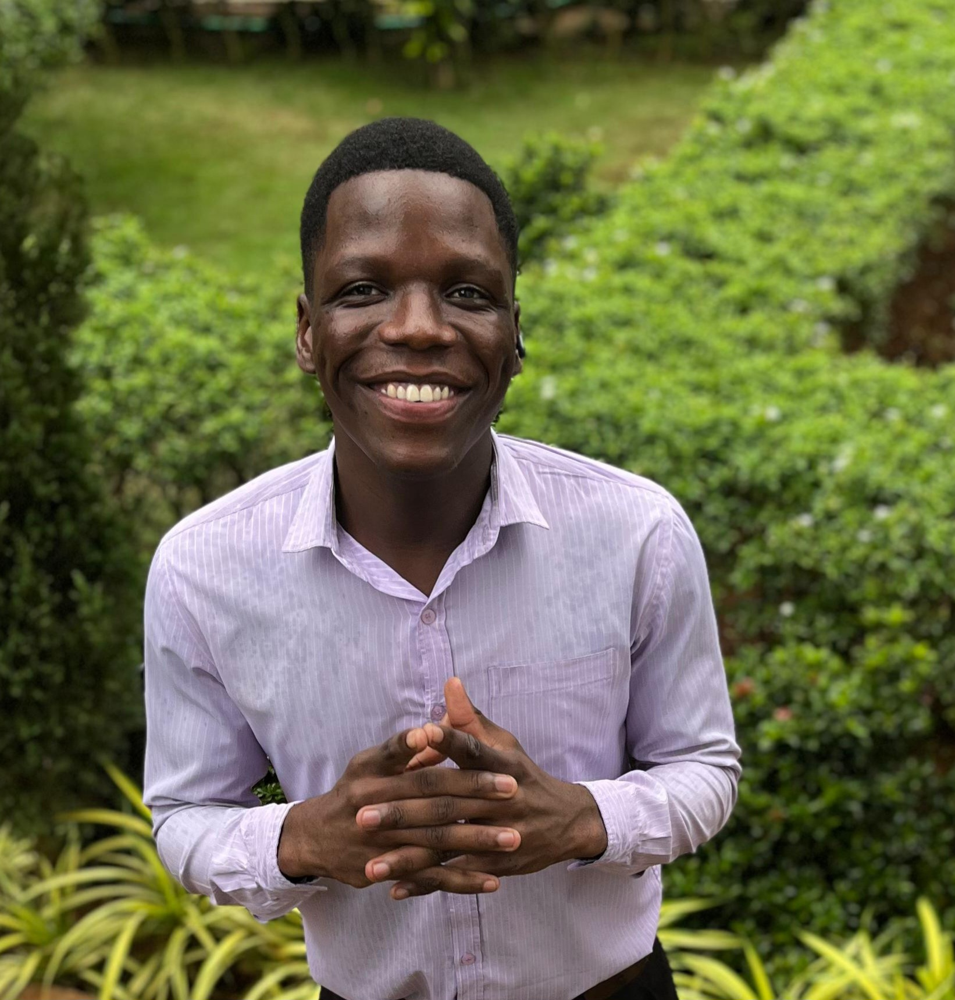

I am, Kelvin Moyo a DevOps and Cyber Security geek. Boujock is part of my DevOps Internship project , which seeks to automate the build, test and deployment processes(for a web app) using a Jenkins CI/CD pipeline, Git for version control and Apache Tomcat server for hosting. Currently pursuing B.Tech in Computer Science Engineering(2023-2027) and keen to learn from fellow enthusiasts. Feel free to reachout to me here